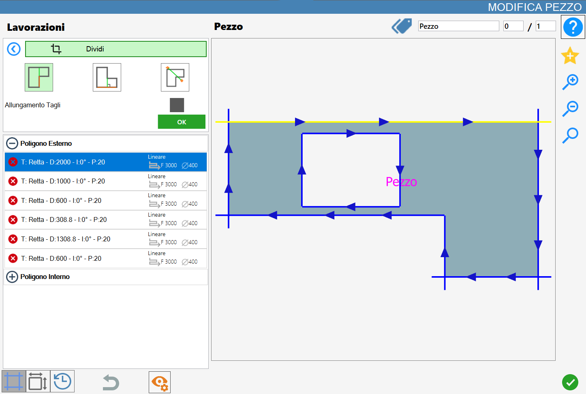
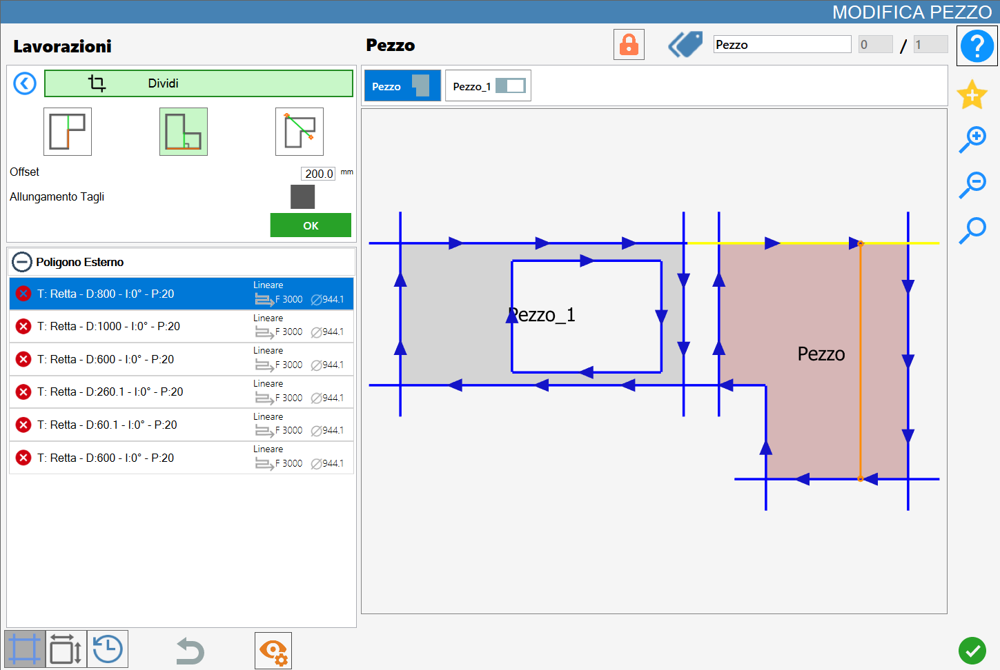
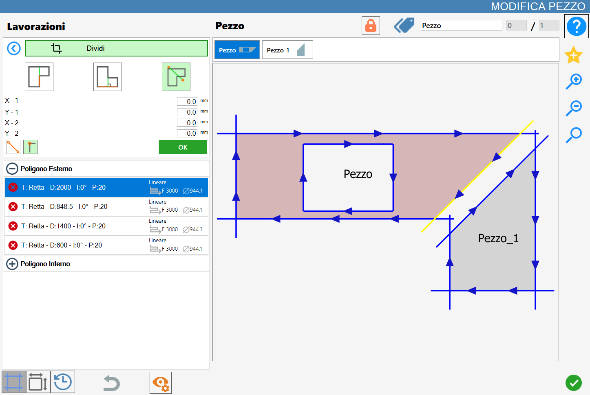

The 'Split' function allows to cut the piece using the reference, the side, a perpendicular line or a customized line.
The interface for this function resembles the following image:

Parameters
To use this working, it is necessary first to choose one of the three available modes, selecting the corresponding button:
 | Parallel cut |
 | Orthogonal Cut |
 | Cut passing through two points |
Parameters for 'Parallel Cut' and 'Orthogonal Cut'
For the next two buttons below there is the possibility to enable or not this function clicking on the checkbox on the right of the writing 'Extension cut'.
Stretching cuts | This function allows the operator to extend the cut applied to the selected side, extending it until it covers the entire length of the piece in the cutting direction. |
Offset | The operator has the possibility to set the distance of the cut along the transverse axis, measured with respect to the center of the reference side. |
Parameters for 'Through cut for two points'
For the next key there is the possibility to go to define the coordinates of the two points that constitute the division line.
Setting parameters points line of division | Upon activation of the function, four parametric fields will be available in which the operator can specify the coordinates (X, Y) of the initial and final points of the cutting line. |
Cutting orientation | |
 | Corner hooking |
Execution working
NOTEIt is possible to apply the work by pressing the button on the left of the appropriate cut in the list of polygons.An icon red with a 'X' indicates that the working process can’t be applied to the desired cut.
Parallel cut
In the following image a parallel cut has been executed on the piece already visualized in the cover of the chapter:

Orthogonal cut
In the following image a cut orthogonal has been executed on piece already visible in cover of chapter:

Cut through two points
In the following image has been executed a through cut for two points using the hooking function of the vertices on the piece already visible in the cover of the chapter:

In the following image a cut through has been done for two points without using any particular function on the piece already displayed in the cover of the chapter:

Division of pieces
When to the selected piece one or more pieces have been associated through Division workings, a specific button for the management of the associated pieces appears in the upper part of the 'Modify Piece' panel.
 | Split pieces |
|---|
Before the split, the associated pieces are managed in a unified way inside the work area. In this state, a block composed of multiple elements is created that will undergo the same operations, without yet being divided.
For example, when one of the pieces generated through division is added to the working area from the piece list, also all the other associated elements are automatically inserted.
At the pressure of the button Divide Pieces, each piece generated through divide will be dissociated from the original piece and treated as an independent element.
Subsequently, both the list of pieces associated, previously visible above the preview in the Edit piece panel, and the button for the division of pieces will disappear from the interface.